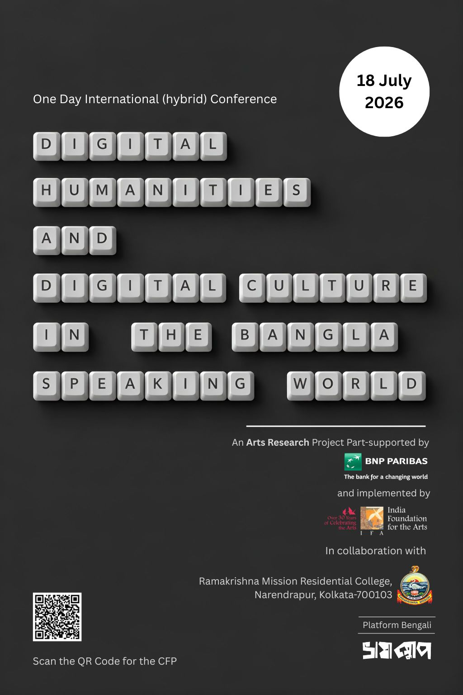

Digital Humanities and Digital Culture
in the Bangla-Speaking World
A One-Day Academic Conference

About the Conference
Platform Bengali: Digital Humanities and Digital Culture in the Bangla Speaking World is a one-day hybrid academic conference that seeks to bring together scholars from literary and cultural studies, linguistics, media studies, and the Digital Humanities to examine how digital technologies are reshaping the Bengali language, its cultural production, and the institutions that sustain it.
Spoken by over 270 million people across national borders, diaspora networks, and digital platforms, Bengali is undergoing a transformation that is at once linguistic, aesthetic, and institutional. The rise of social media, streaming platforms, YouTube content creation, machine translation, and AI-driven language tools has generated new registers, audiences, and modes of cultural participation that existing disciplinary frameworks struggle to account for.
Situated at the intersection of Digital Humanities and Digital Culture studies, the conference introduces conceptual vocabularies, including "platform vernaculars" and "vernacular remediation," to make sense of rapidly evolving, multimodal, and often ephemeral digital objects in Bengali.
Themes and Topics
We invite contributions that engage with the following four thematic clusters:
- Emerging trends in digital syntax, orthography, and neologisms.
- Code-switching, transliteration, and Banglish on written Bengali.
- Pedagogy in the age of AI, machine translation, and learning tools.
- Computational and corpus-based approaches to studying language change.
- Evolution of blogs, literary portals, and web magazines.
- Register formation on Facebook, Instagram, and X/Twitter.
- Memes as vernacular archives: humour, subversion, and remix culture.
- Linguistic innovation among YouTube content creators.
- New visual regimes in OTT series, vertical films, and micro-dramas.
- Audio storytelling: podcasts, audio dramas, and radio afterlives.
- Literary culture: digital book fairs and internet microcelebrities.
- DH tools, archives, and projects (e.g., Bichitra, Shabdakalpa).
- Informal digital archives, piracy networks, and volunteered labour.
- Transnational Bengali: migration, diaspora, and borderless practices.
- Transformation of cultural marketing, trailers, and PR registers.
- Language policy, standardisation, and documenting vernacular shifts.
- Politics of platform governance and algorithmic mediation.
Indicative Timeline
Publication: Select papers will be invited for inclusion in a peer-reviewed edited volume (Bloomsbury has expressed strong interest).
Conference Convenor: Pranab K Mondal
Volume Editors: Prithu Halder, Debapriya Basu, Spandan Bhattacharya